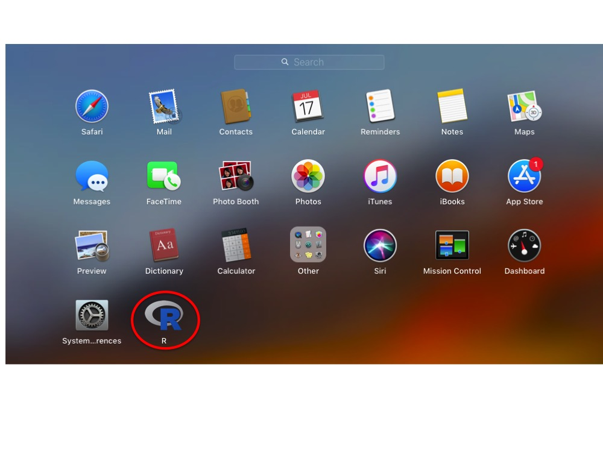

Before You Start
You will need administrator privileges. This
gives the installation script access to write-protected
parts of the system.
Overview
Of all the operating systems, macOS proved to be the most challenging in which to develop
a robust set of instructions for installing a multi-threaded version of
R and Eagle. Unlike on a Linux and Windows system, here R Open would not install cleanly when an older version
of R was present. To get around this problem, we have instead opted to install standard R and
replace its single-threaded math libraries with multi-thread (openBLAS) math libraries.
The instructions below look worse than what they actually are.
The process is install R, install some compilers to allow R to handle source code,
install openBLAS for multi-threaded
computation, and then install Eagle.
Step 1: Install XQuartz
XQuartz contains libraries for running X11 from within a macOS
environment. Some of the packages upon which Eagle is dependent require X11 support.
- Go to the Quartz website and
click on XQuartz-2.7.11.dmg to download the file.
- Go into the Downloads folder and click on the file to begin the
installation process.
- Once the installation has finished, click on Move to Trash to remove the installation package.
- To complete the installation process, Log out and log back in to your account.
Step 2: Install the latest version of clang
Eagle, as well as some of its dependencies, require compilation via C and C++ compilers.
Your system may already have these compilers, especially if you have Xcode installed.
However, Eagle failed to install under some macOS versions when we used the C and C++
compilers in Xcode due to OpenMP parallelisation not being supported.
Below are instructions for installing a set of C and C++ compilers, as recommended on CRAN,
with OpenMP support.
- Go to the Tools page on CRAN. This page can also be
accessed by going to the CRAN home page, clicking on
Download R for (Mac) OS X, and clicking on the tools link that is buried in the fourth paragraph.
- Click on clang-6.0.0.pgk to begin downloading the package.
- Go into the Downloads folder and click on the file to begin the
installation process.
- Once the installation has finished, click on Move to Trash to remove the installation package.
Step 3: Making the C and C++ compilers findable to R
The easiest way of telling R to use the latest C compilers that were installed in Step 4 is to
create a Makevars file as follows.
- Create a new .R directory with the command
mkdir ~/.R
- Change into the new .R directory and create a new Makevars file using
nano Makevars
- Using the CC and CXX flags, add the location and name of the new clang and clang++ compilers that were installed in Step 4.
On our system (High Sierra), the extra lines are
CC=/usr/local/clang6/bin/clang
CXX=/usr/local/clang6/bin/clang++
- Save and exit the file
Step 4: Install the latest version of GNU Fortran
- Go to the Tools page on CRAN. This page can also be
accessed by going to the CRAN home page, clicking on
Download R for (Mac) OS X, and clicking on the tools link that is buried in the fourth paragraph.
- Click on gfortran-6.1.pgk to begin downloading the package.
- Go into the Downloads folder and click on the file to begin the
installation process.
- Once the installation has finished, click on Move to Trash to remove the installation package.
Step 5: Install the latest version of R from CRAN
Eagle requires R 3.4 or later. However, it is always good practice the be using the latest version
of R. Below are instructions on where to get the latest version and its installation.
- Go to the CRAN website and click on the latest
release of R for the Mac (R-3.5.1.pkg).
- Go into the Downloads folder and click on the file to begin the
installation process.
- Once the installation has finished, click on Move to Trash to remove the installation package.
Step 6: Installation of Homebrew
Homebrew is a package manager for those packages not supported by Apple. We will use Homebrew
to install openBLAS.
- Go to the Homebrew website
- Copy the ruby command in the dialogue box into a terminal window and follow the instructions
Step 7: Installation and linking of OpenBLAS
OpenBLAS is a package containing multi-threaded math libraries for linear algebra operations. By replacing R's default
libraries with the OpenBLAS libraries, many of R's linear algebra operations become implicitly parallelised. Eagle has been
developed specifically to harness these multi-threaded math libraries. Below are instructions for installing OpenBLAS via
Homebrew and then replacing R's default math libraries with OpenBLAS libraries.
- To install OpenBLAS, run the following command from a terminal
brew install openblas
Depending upon the state of your system, brew may return an error about directories not being writable.
Just run the sudo command that is given in the error message to fix this problem and rerun the above
command.
- Next, we need to find the location (path) of the R math library file libRblas.dylib. To do this,
run the following command from a terminal
sudo find / -name 'libRblas.dylib' -print
On our system (High Sierra 10.13), it was located in /Library/Frameworks/R.framework/Resources/lib/.
- We also need to find the location of the OpenBLAS math library file libopenblas.dylib. Using the
same
find command as we used above, run the following command from a terminal
sudo find / -name 'libopenblas.dylib' -print
On our system (High Sierra 10.13), it was located in /usr/local/Cellar/openblas/0.3.3/lib/.
- Replace libRblas.dylib with libopenblas.dylib for multi-threaded computation.
To do this, use
sudo ln -sf location_of_libopenblas.dylib location_of_libRblas.dylib
For example, on our system, the command looks like
sudo ln -sf /usr/local/Cellar/openblas/0.3.3/lib/libopenblas.dylib /Library/Frameworks/R.framework/Resources/lib/libRblas.dylib
but it may be different on your system.
Step 8: Run R
R can be run as an App from the Launchpad

By clicking on the R icon, the R console window will appear.
Step 9: Installation of the Eagle package
To install the Eagle package, from the R Console window, use the install.packages( ) command
install.packages("Eagle" , repos = "https://cloud.r-project.org/", dependencies=TRUE)
This will install Eagle and all of its dependencies.
Step 10: Start using Eagle
To start using Eagle, from the R command window, type
library("Eagle")
This will load the Eagle package into your R session, ready for use.
Go to Quick Start Guide for instructions
on how to use Eagle.